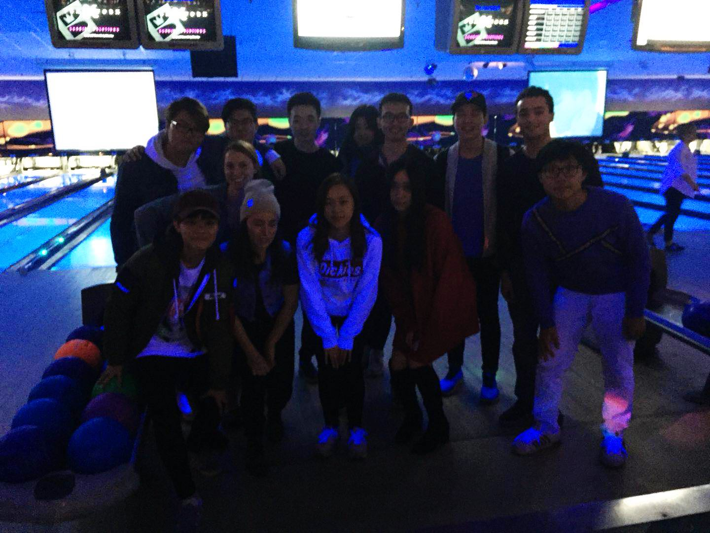

About Us
SASSA is the official student organization serving SFU's Statistics and Actuarial Science Undergraduate Students. We are dedicated to serving all students by creating a friendly and positive community, providing study groups, and networking among faculty. We are also part of the Departmental Student Union (DSU) as part of the Simon Fraser Student Society (SFSS).
We Also Like To Have Fun!
First meeting of the new school year!!
Everyone in a Statistics and Actuarial Science class is invited

Here are some events that we are currently planning:
Past Events:
Thank you for coming out to Bowling Night, it was a blast!

Resources
Careers at Statistics Canada
American Statistical Association
(Largest Professional Statistical Society in the World)
See Amstat.org
Free Manuals and Textbooks
See Library Reserves
Courses Covering SOA Preliminary Exams
Exam P STAT 270, 285, 330
Exam FM ACMA 210, BUS 312, 315, 316
Exam MLC ACMA 320, 425
Exam MFE BUS 316, 419 and others
Exam C ACMA 315, 335, 445, STAT 450